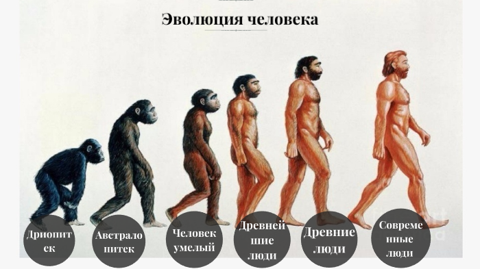

Эволюция человека - это эволюционный процесс в истории приматов, который привел к появлению Homo sapiens как отдельного вида семейства гоминид, в которое входят все человекообразные обезьяны. Этот процесс включал постепенное развитие таких черт, как двуногость человека, ловкость и сложный язык, а также скрещивание с другими гомининами (племя из подсемейства африканских гоминид), указывая на то, что эволюция человека была не линейной, а паутинообразной. Изучение эволюции человека включает в себя несколько научных дисциплин, включая физическую и эволюционную антропологию , палеонтология и генетика. Приматы отделились от других млекопитающих около 85 миллионов лет назад (млн лет назад), в позднем меловом периоде, а их самые ранние ископаемые останки появились более 55 млн лет назад, в палеоцене. Приматы производили последовательные клады, ведущие к надсемейству обезьян, которое дало начало семействам гоминид и гиббонов; они разошлись примерно на 15-20 млн лет назад. Африканские и азиатские гоминиды (включая орангутанов) разделились около 14 млн лет назад. Гоминины (включая подтрибы австралопитеков и панин) отделились от племени гориллини (горилл) между 8-9 млн лет назад; австралопитеки (включая вымерших двуногих предков человека) отделились от рода Пан (включающего шимпанзе и бонобо) 4-7 млн лет назад. О роде Homo свидетельствует появление H. habilis более 2 млн лет назад, в то время как анатомически современные люди появились в Африке примерно 300 000 лет назад.
